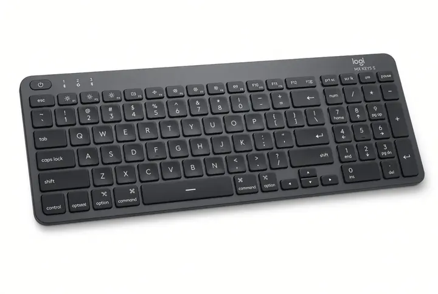
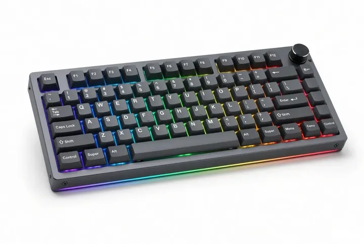
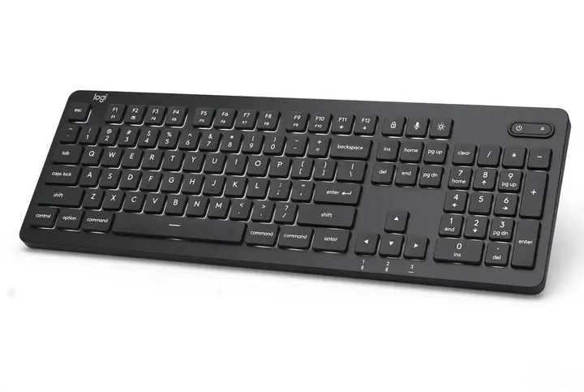
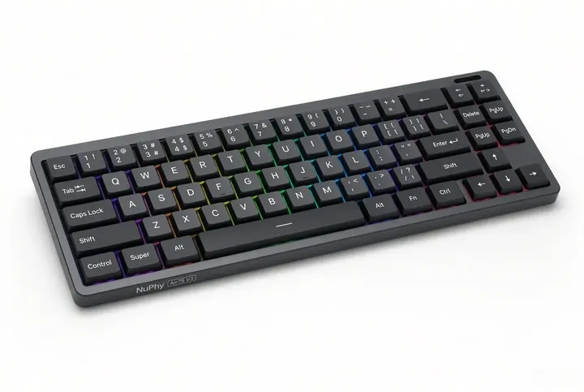
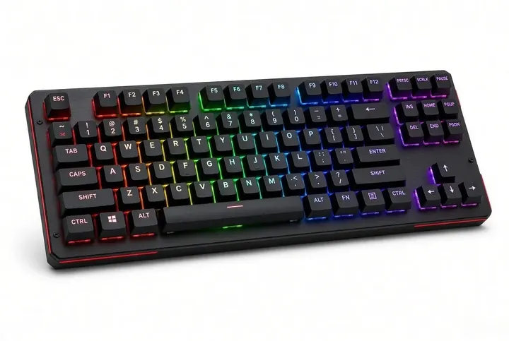
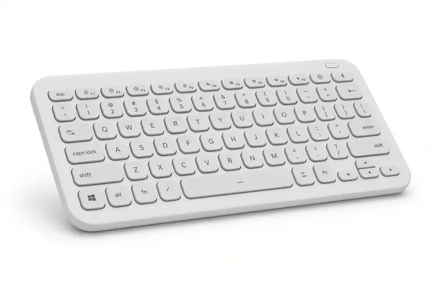
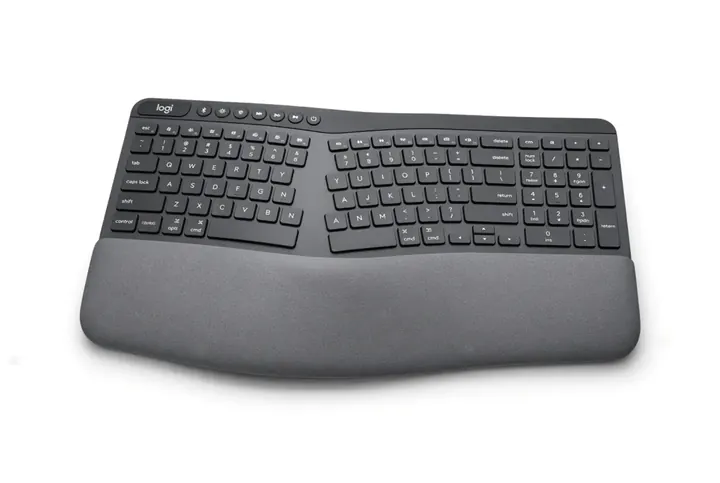

Best Keyboard to Buy in the USA (2026): Top 7 Picks
Affiliate disclosure: Some links on this page are Amazon affiliate links. If you buy through them, Rocket Typing earns a small commission at no extra cost to you. Our picks are based on features, typing feel and value, not on commission. As an Amazon Associate we earn from qualifying purchases. Product images are illustrative; check the Amazon listing for exact design and specs.
⚡ Quick Picks: Best Keyboards to Buy in America
| Keyboard | Best For | Type | Budget | Buy |
|---|---|---|---|---|
| Logitech MX Keys S | Best overall | Quiet scissor, wireless | Mid-range | Amazon → |
| Keychron Q1 Max | Best mechanical | Mechanical 75%, wireless | Premium | Amazon → |
| Logitech MX Mechanical | Office + mechanical | Low-profile mechanical | Premium | Amazon → |
| NuPhy Air75 V3 | Slim mechanical | Low-profile 75%, wireless | Mid to premium | Amazon → |
| Redragon K552 | Best budget | Wired TKL mechanical | Budget | Amazon → |
| Logitech Pebble Keys 2 K380s | Portable / laptop | Slim compact, wireless | Budget | Amazon → |
| Logitech ERGO K860 | Wrist comfort | Split ergonomic, wireless | Mid-range | Amazon → |
Prices change daily on Amazon, so we show budget tiers instead of numbers. Click "Amazon" to see today's price.
🧭 How to Choose a Keyboard in the USA
- Pick a US (ANSI) layout: It matches standard American keyboards and typing tests. Avoid ISO or imported layouts.
- Mechanical vs. slim: Mechanical keyboards feel more distinct and last long. Slim scissor-switch keyboards are quieter and feel like a laptop.
- Wireless or wired: Wireless is tidier and works across laptop, tablet and phone. Wired is cheaper and never needs charging.
- Size: Full-size keeps the number pad for spreadsheets. 75% and TKL save desk space. Compact layouts need a short adjustment period.
- Comfort: If you type for hours, wrist position matters as much as switch feel.
No keyboard makes you fast by itself. Speed comes from practice and accuracy, and a keyboard you enjoy makes you practice more. Want the deeper dive? See our guide to the best keyboards for fast typing.
🏆 The 7 Best Keyboards to Buy in America
Logitech MX Keys S

The easiest keyboard to recommend to almost anyone. Low-profile keys feel smooth and quiet, the backlight adjusts to the room, and you can switch between several devices at the touch of a key. It works with Windows, Mac, Linux, iPad and Android, and keeps the number pad.
- ✅ Quiet, comfortable, laptop-style typing
- ✅ Easy multi-device switching and rechargeable battery
- ⚠️ Not mechanical, so no hot-swappable switches or custom keycaps
Keychron Q1 Max

A premium mechanical keyboard for people who want a heavy, solid build and a deeper, more satisfying sound. The compact 75% layout keeps arrow keys and function row while saving desk space, and the hot-swappable design lets you change switches later without soldering.
- ✅ Excellent build quality and typing feel
- ✅ Wireless, customizable and hot-swappable
- ⚠️ Heavy and louder than slim keyboards, so not ideal for shared spaces
Logitech MX Mechanical

Mechanical feedback in a slim, work-friendly package. Logitech offers different switch types, so you can choose between tactile, linear and clicky feel. It carries the same polished multi-device workflow as the MX Keys S.
- ✅ Mechanical feel without a bulky desk presence
- ✅ Strong wireless and multi-device support
- ⚠️ Costs more than the MX Keys S, and low-profile switches feel different from full-height ones
NuPhy Air75 V3

If you want mechanical feedback but find full-height boards too tall, the Air75 V3 is a thin, compact option that travels well and pairs nicely with a laptop.
- ✅ Thin profile with real mechanical switches
- ✅ Compact 75% layout that is good for small desks
- ⚠️ Fewer dedicated keys, so you will use function layers
Redragon K552

A long-time favorite for people who want a mechanical keyboard without spending much. It is wired, compact (no number pad) and simple, which makes it a great first mechanical board for students and beginners.
- ✅ Very affordable mechanical keyboard
- ✅ No batteries, no pairing, just plug in
- ⚠️ Not wireless and not hot-swappable
Logitech Pebble Keys 2 K380s

A small, light, low-cost wireless keyboard that fits in a bag. It connects to several devices, which makes it handy for laptops, tablets and phones when the built-in keyboard is not comfortable.
- ✅ Very portable and inexpensive
- ✅ Pairs with multiple devices
- ⚠️ No backlight and not mechanical; round keys take a little getting used to
Logitech ERGO K860

If you type for hours and your wrists feel it, the split, curved design keeps your hands in a more natural position. It is a gentle step into ergonomic keyboards before trying fully split boards.
- ✅ Wrist-friendly shape with built-in palm rest
- ✅ Wireless and easy to set up
- ⚠️ Takes a few days to adapt and is larger than standard keyboards
📍 Where to Buy a Keyboard in America
- Amazon.com: Fast Prime shipping, easy returns and frequent deals. Look for "Ships from and sold by Amazon" or the brand's official store to avoid counterfeits and gray-market imports.
- Brand websites: Keychron, Logitech and NuPhy sell direct and offer US warranty support.
- Local stores: Best Buy and Micro Center let you try keys in person, which is useful if you are unsure about switch feel.
- Best time to buy: Amazon's autumn Prime event, Black Friday, Cyber Monday and back-to-school season usually bring the best discounts.
💡 Pro Tip: Test your speed and accuracy on Rocket Typing before you buy, then again after two weeks on your new keyboard. Compare your results during Amazon's return window so you can swap it if it does not suit you.
❓ Frequently Asked Questions
📚 Related Guides
- Best Keyboards for Fast Typing
- Best Keyboards for Programmers
- Best Quiet Keyboards for Typing
- Ergonomic Keyboard Buying Guide
🛒 Our #1 Pick: Logitech MX Keys S
Quiet, comfortable and works with every device. See today's price on Amazon, then test your speed on Rocket Typing.
Check Price on Amazon →